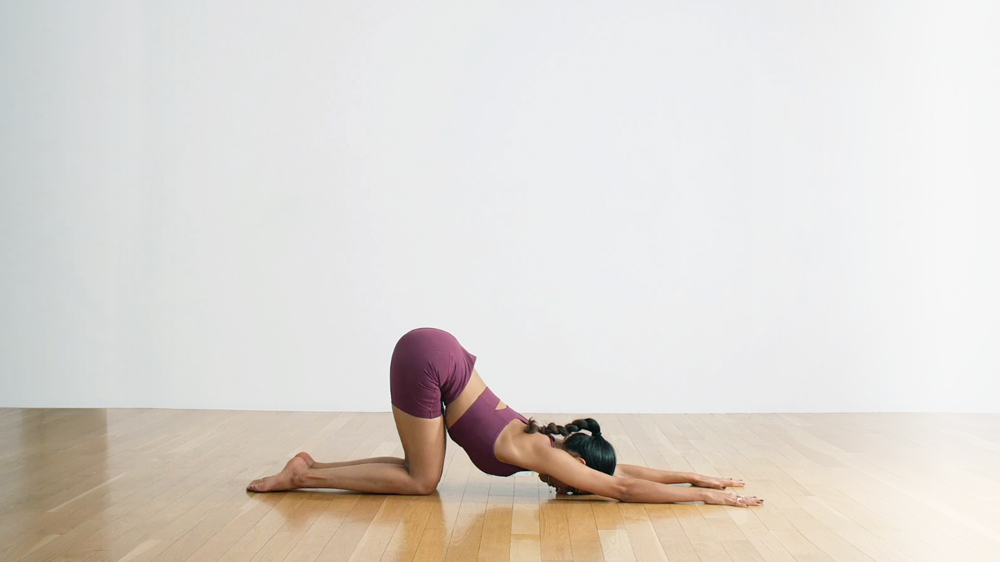
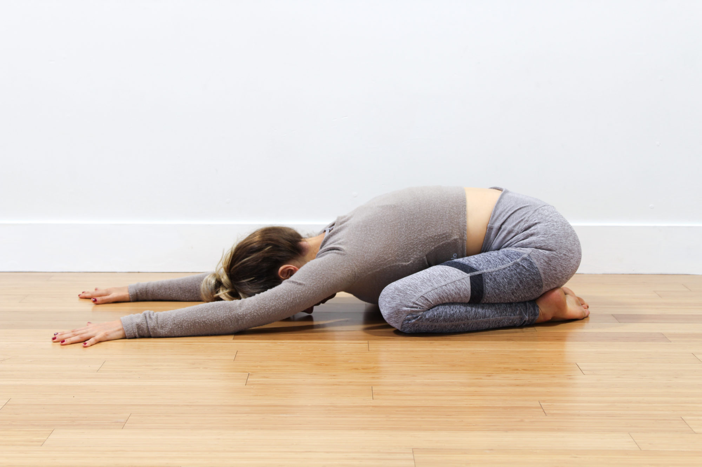

Custom Request Document
Custom Requests
01
Idea One
(NUDE version) Extended Puppy Pose transition into Child Pose(Balasana) (top pictures) With the extreme low angle like the bottom picture and gif.


GIF
